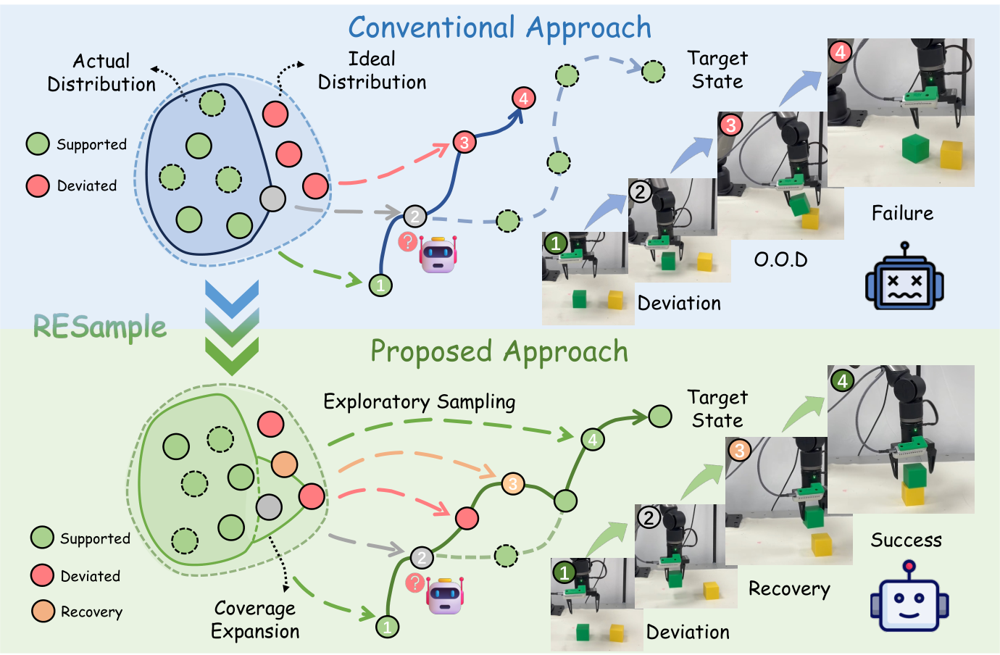
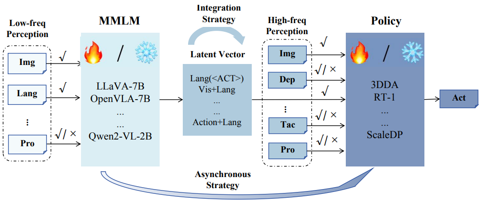

I am a research-based master’s student (MEng) at Nanyang Technological University, advised by Prof. Ziwei Wang as part of the Pine Lab.
I received my Bachelor of Engineering degree from Southwest University in June 2025. During my undergraduate studies, I was also a visiting student at Westlake University, advised by Prof. Donglin Wang.
I became a master student at Nanyang Technological University.
May 2025
I became an outstanding undergraduate graduate of Southwest University.
Jul 2024
I became a visiting student at Westlake University.
Apr 2024
One paper “DLEE: A Dataset for Chinese Document-level Legal Event Extraction” got accepted to NCAA.
Research
My research focuses on sample-efficient robot learning for manipulation. I study how robots can improve beyond demonstrations by learning from real-world interaction, human feedback, and world-model-generated experience. My work spans online reinforcement learning, failure recovery, vision-language-action models, and efficient visuomotor policies.
WorldSample expands real-robot rollouts into synthetic training experience with a task-adapted world model. Policy-Paced Learning selects and schedules generated data to limit value overestimation. Across five manipulation tasks, it raises average success from 56% to 82% over HIL-SERL while reducing average training steps from 56K to 23K.
PACT uses human interventions to correct credit assignment in real-robot reinforcement learning. It identifies suboptimal trajectory segments, calibrates critic targets using intervention-derived preferences, and aligns the actor with corrective actions. Across five tasks, average success rises from 58.0% to 82.5%, while the intervention rate falls from 47.1% to 32.3% versus HIL-SERL.
This survey organizes reinforcement learning for VLA models from pretraining to real-world deployment. It connects model architectures, training paradigms, deployment frameworks, and evaluation benchmarks, and examines how interaction-driven learning can improve generalization beyond imitation datasets.

Targeted data for recovering from execution errors
RESample uses a learned coverage function to guide exploration toward underrepresented, recoverable deviations, then augments demonstrations with targeted recovery trajectories. On LIBERO and real-world manipulation tasks, it improves success by up to 12 percentage points with no more than 20% additional training samples.

Connecting high-level reasoning and low-level control
OpenHelix studies how high-level multimodal models and low-level control policies should be connected in dual-system VLA architectures. It combines a survey, empirical analysis of key design choices, and an open-source model to support reproducible comparisons and further development.
SDM Policy distills diffusion-based visuomotor policies into one-step generators through score and distribution matching. A dual-teacher design supports action quality during distillation, achieving a 6× inference speedup on a 57-task simulation benchmark.
DLEE provides a dataset for Chinese document-level legal event extraction, supporting the study of event structures and arguments distributed across legal documents.
Honors and Awards
Outstanding undergraduate graduate of Southwest University
Southwest University First-Class Scholarship (Top 3%)
Southwest University Second-Class Scholarship (Top 8%)